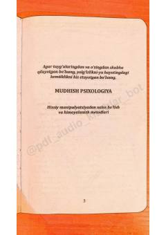

MPHissiy manipulyatsiyadan himoyalanish va psixologik ta'sirlarni tushunish bo'yicha qo'llanma.
Ushbu kitob insonlarni boshqarish va hissiy manipulyatsiyadan himoyalanish usullarini tushuntirib beradi. Unda insonlarning hokimiyatga bo'lgan intilishi va psixologik ta'sir o'tkazish mexanizmlari ilmiy tajribalar misolida tahlil qilinadi.